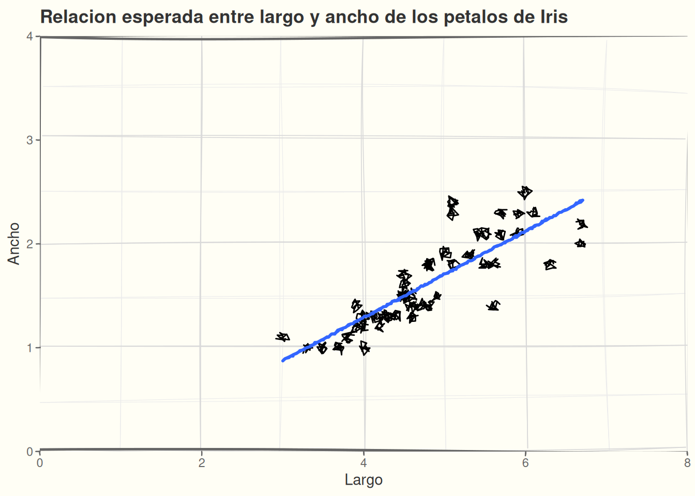
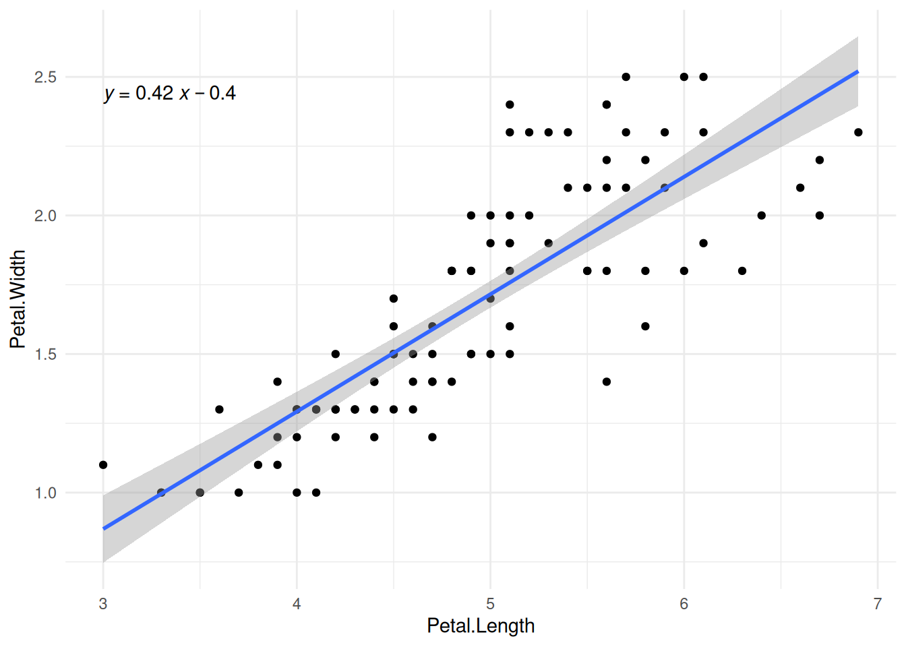
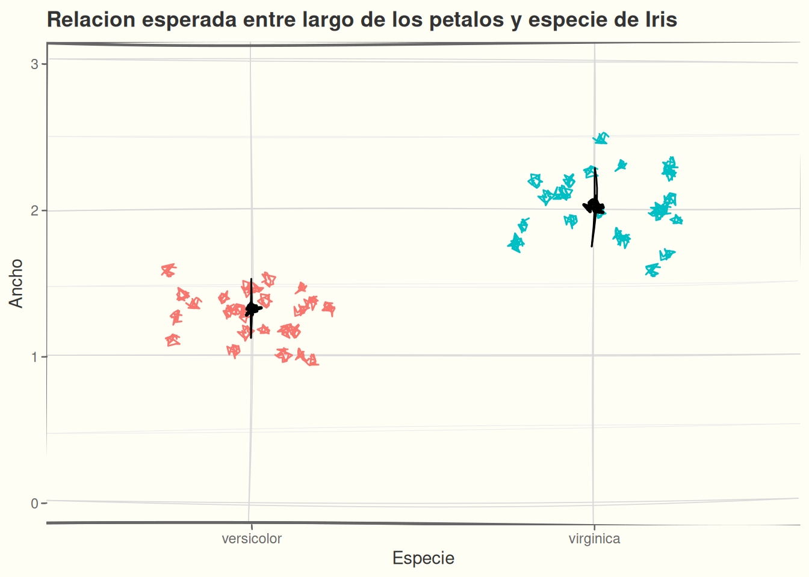
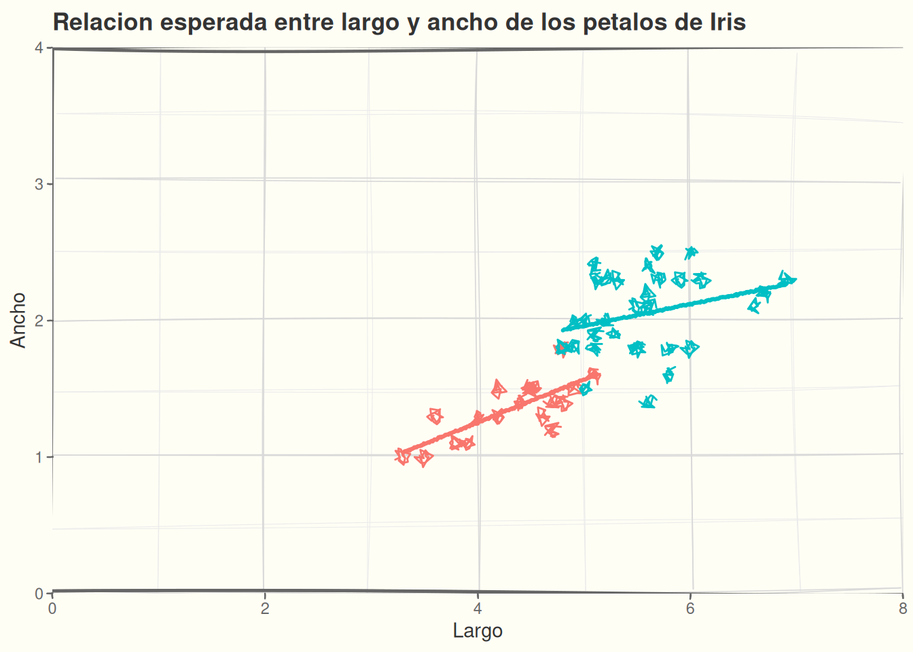

Lab 05: Vinculo entre prediccion y modelo
Regression
Hipotesis:
El ancho de los petalos de diferentes especies de Iris es determinado por el largo de los petalos, debido a el desarrollo coordenado de las dimensiones florales. Esta relacion puede diferir entre especies, ya que cada especie puede tener patrones de crecimiento floral distintos o forma interacciones con polinizadores diferentes (especies de abejas).
Prediccion 1
El ancho de los petalos aumentara con el largo de los petalos.
Representacion grafica. Dibujamos esto en nuestra bitacora a mano o con datos preliminares:
La prediccion y el grafico nos indican claramente cuales datos se necesitan y cual parametro tenemos que estimar para comprobar la prediccion. En este caso, el grafico sugiere una relacion lineal, entonces a comprobar la prediccion empezaremos con una regression lineal, y la cantidad de interes es la pendiente de la regression.
Ajustar el modelo
Traduccimos a codigo:
- Predicción: el ancho aumenta con el largo.
- Patrón esperado: una relación positiva.
- Modelo: Petal.Width ~ Petal.Length.
- Cantidad que representa la predicción: pendiente de Petal.Length.
- ¿Qué esperamos encontrar? una pendiente >0.
modelo_pred_1 <- lm(Petal.Width ~ Petal.Length, data = iris_sub)
coef(modelo_pred_1) (Intercept) Petal.Length
-0.4022832 0.4236207 Graficar el resultado
Usaremos el paquete {ggpubr} para agregar la equacion del modelo en el grafico automaticamente:
ggplot(iris_sub, aes(x = Petal.Length, y = Petal.Width)) +
geom_point() +
geom_smooth(method = "lm", se = TRUE) +
ggpubr::stat_regline_equation() +
theme_minimal()
Interpretacion
Contestamos estas preguntas:
- El signo de la pendiente concorda con nuestra prediccion?
- Puede ser al pendiente cero?
- Que tan seguro es el modelo sobre el signo y tamano de la pendiente?
- Hay observaciones que parecen outliers o que influyen (hallan) la linea de regression fuera del nube de puntos?
Para contestar preguntas 1-3, usamos la funcion confint y funciones del paquete {emmeans}:
confint(modelo_pred_1) 2.5 % 97.5 %
(Intercept) -0.6934560 -0.1111103
Petal.Length 0.3650852 0.4821562- El signo es positivo
- Una pendiente de cero no es probable, porque el intervalo de confianza no incluye
0 - El modelo es bastante seguro sobre el tamaño de la pendiente. El ancho del intervalo de confianza para la pendiente es
0.12para un estimado mas probable de0.42. Dados los datos y el tipo de modelo, la pendiente puede ser tan pequeña como0.37o tan grande como0.48. - Para pregunta 4, podemos revisar los graficos diagnosticos (ver la actividad de Laboratorio 4)
Conclusion
El resultado concuerda con la predicción.
Prediccion 2
Diferentes especies de Iris tienen diferentes anchos de sepalos
La segunda prediccion solo se enfoca en el tamaño de los sepalos entre especies. En este caso no nos importa como el largo del sepalo esta relacionado con el ancho. Entonces el modelo tiene que considerar el especies como una variable predictor.
Tip
En R un modelo lineal (lm()) con un predictor categorico es equivalente a una prueba de ANOVA (en R la funcion aov())
Entonces este modelo se puede considerar como analisis de varianza en el ancho del petalo por especies.
Graficar la prediccion

Ajustar el modelo
Define:
- Patron esperado:
- Modelo:
- Cantida(des) que representa(n) la prediccion:
- ¿Qué esperamos encontrar?:
Ajustar el modelo aqui:
# tu codigo aqui para el modelo
# y para los coeficientes del modeloInterpretacion
Contestamos estas preguntas:
- La(s) cantidad(es) de interes concorda(n) con nuestra prediccion?
- Puede(n) ser la(s) cantidad(es) de interes cero?
- Que tan seguro es el modelo sobre su estimacion de la(s) cantidad(es) de interes?
- Si nos interesan varias cantidades, sus intervalos de confianza traslapan? Mucho o poco?
# calcular los intervalos de confianza aqui:Su respuestas a preguntas 1-3:
Conclusion
Contesta brevemente si el resultado concuerda con la prediccion:
Prediccion 3
La relación entre el largo y el ancho de los sépalos difiere entre especies de Iris.
Ahora, aqui nos interesan las diferentes especies y tambien la relacion con el largo del sepalo. Entonces necesitamos un modelo con dos predictores que interactuan, para poder estimar si la pendiente en especies X es diferente que la pendiente en especies Y.
Tip
En R un modelo lineal (lm()) con un predictor categorico y otro continuo es equivalente a una prueba de ANcOVA o analisis de covarianza.
Entonces este modelo se puede considerar como analisis de covarianza del ancho del petalo con el largo de petalo por especies.
Graficar la prediccion

Ajustar el modelo
Tip
Tenemos dos opciones para modelo con dos predictores
Aditivo:
# Especies pueden diferir en ancho, pero comparten la misma pendiente
Petal.Width ~ Petal.Length + SpeciesInteracciones:
# Especies pueden tener pendientes diferentes
Petal.Width ~ Petal.Length * Species¿Cuál corresponde a nuestra predicción? ¿Por qué?
Define:
- Patron esperado:
- Modelo:
- Cantida(des) que representa(n) la prediccion:
- ¿Qué esperamos encontrar?:
Ajustar el modelo aqui:
# tu codigo aqui para el modelo
# y para los coeficientes del modeloInterpretacion
Contestamos estas preguntas:
- La(s) cantidad(es) de interes concorda(n) con nuestra prediccion?
- Puede(n) ser la(s) cantidad(es) de interes cero?
- Que tan seguro es el modelo sobre su estimacion de la(s) cantidad(es) de interes?
- Si nos interesan varias cantidades, sus intervalos de confianza traslapan? Mucho o poco?
# calcular los intervalos de confianza aqui:Su respuestas a preguntas 1-3:
Conclusion
Contesta brevemente si el resultado concuerda con la prediccion: